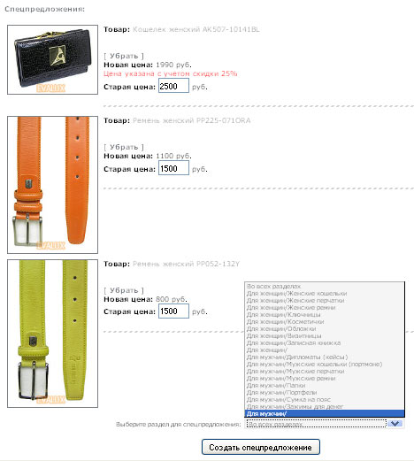
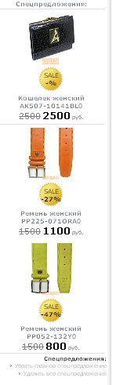

97. Вариант спецпредложений:
Вариант выдачи колонки спецпредложений. Не указывайте Web2.0. Сами
спецпредложения создаются так: заходите под админом, покупаете товары
- которые хотите вставить в спецпредложения, далее жмете Оформить
заказ и как админ - видите кнопку Создать спецпредложения. Жмите ее и
далее указывайте старую цену этого товара и раздел, где будет
показываться это спецпредложение (это может быть главная страница или
определенные разделы и подразделы магазина) и жмите кнопку Создать
спецпредложение.

Удалить
спецпредложение можно из админ-панели - под самим спецпредложением
будут кнопки Удалить ВСЕ, Удалить Главное, Удалить Это
спецпредложение.
В результате видим колонку спецпредложенией